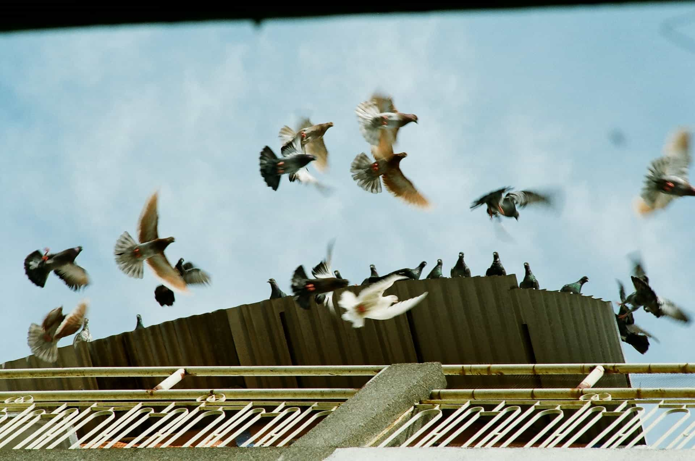
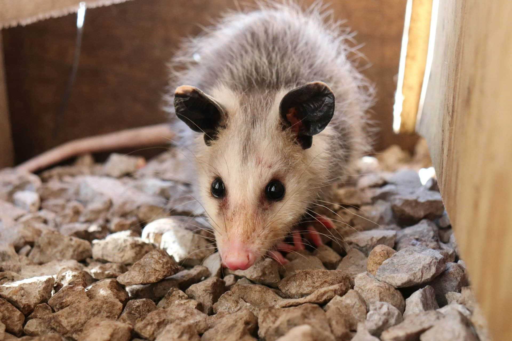
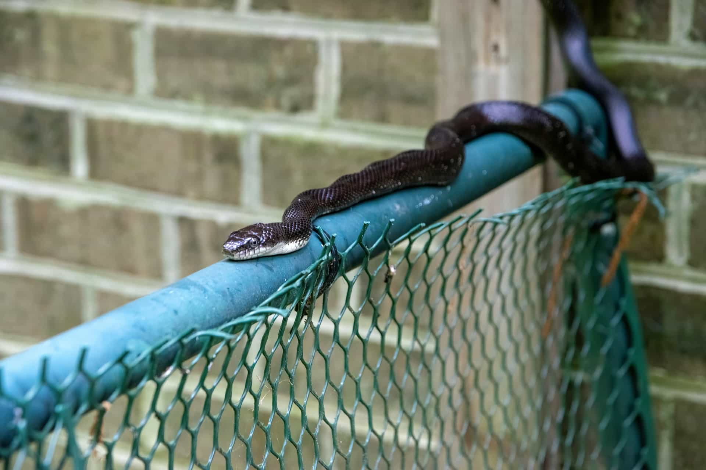
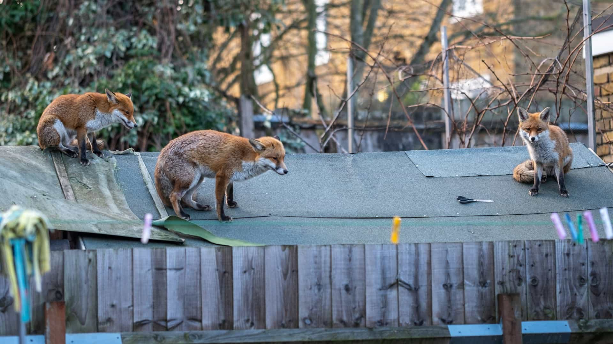
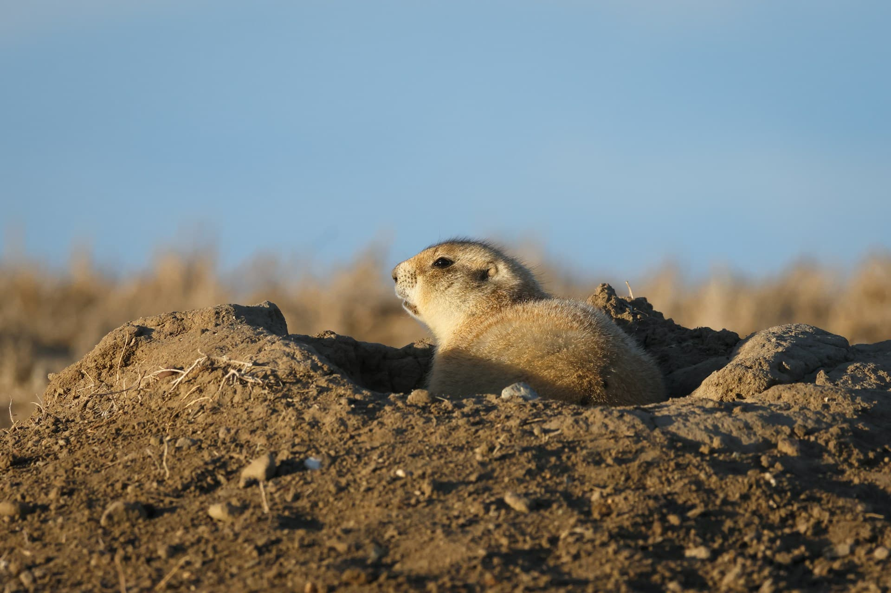
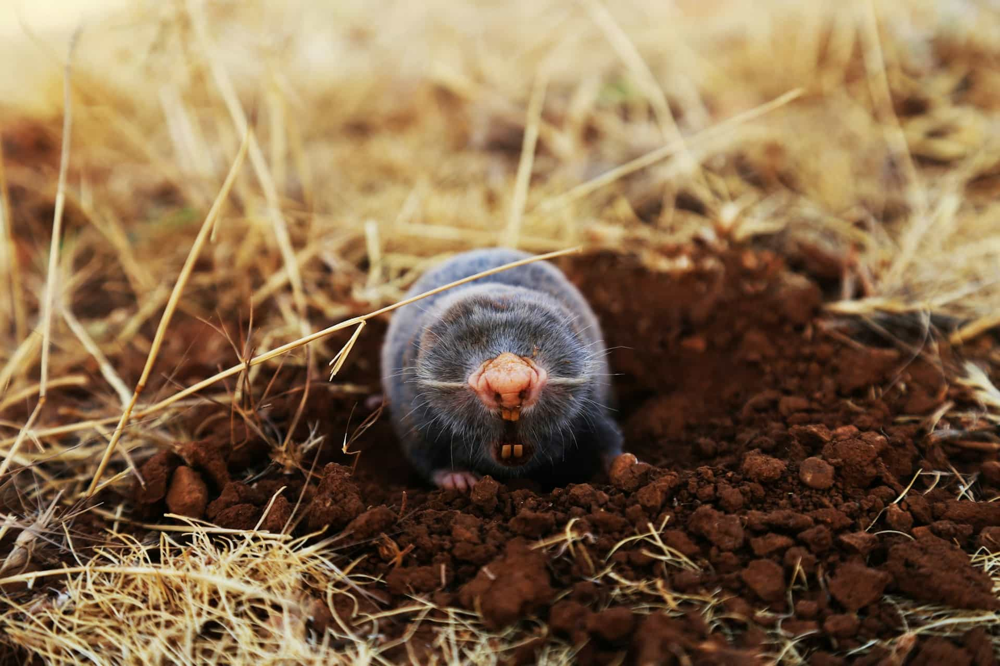
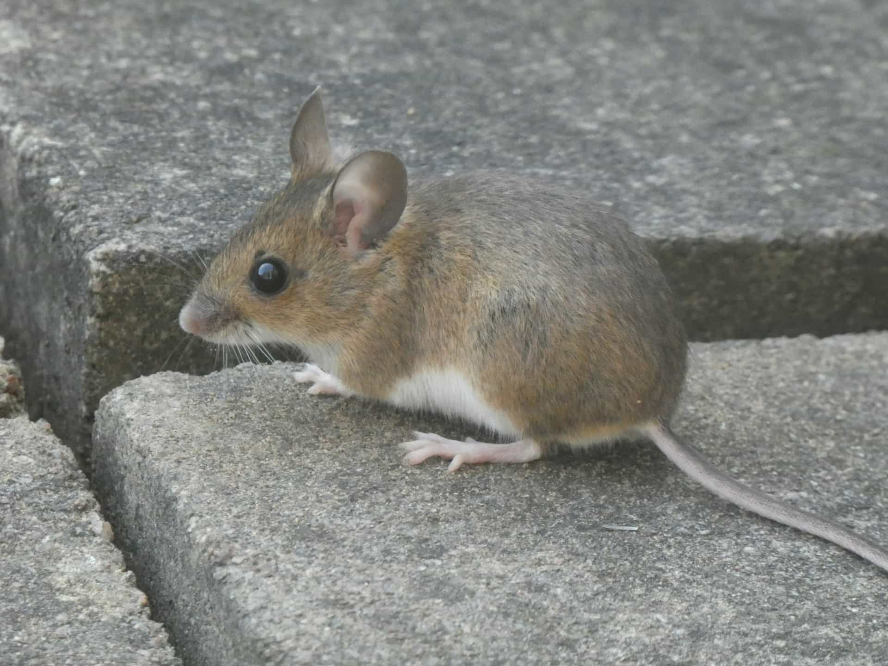
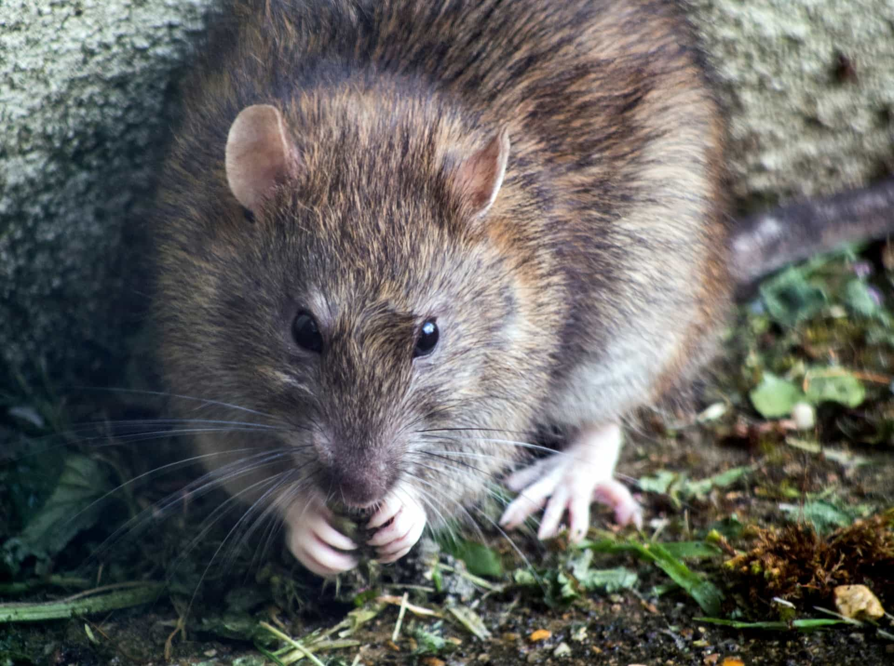

Raccoon Removal
Attic denning, soffit damage, droppings, odor control, and entry-point sealing.
View service detailsAnimal service categories
Browse the most requested animal categories and compare common property concerns, risk areas, and exclusion priorities.
Services typically tied to soffits, vents, roof edges, attic voids, and elevated entry points.
Attic denning, soffit damage, droppings, odor control, and entry-point sealing.
View service details
Chewed fascia, attic scratching, vent screening, and cable or wire risk.
View service details
Colony access points, guano accumulation, and timing-sensitive exclusion work.
View service details
Vent nesting, roofline perching, droppings, and humane deterrent strategies.
View service detailsSpecies commonly found under porches, low-clearance voids, garage edges, and perimeter shelter zones.

Deck voids, crawl spaces, lawn disruption, odor events, and exclusion planning.
View service details
Under-porch access, crawl-space nesting, entry control, and sanitation needs.
View service details
Garage entries, crawl-space encounters, landscape shelter reduction, and sealing.
View service details
Yard denning, outbuilding access, perimeter checks, and habitat risk review.
View service detailsGround-level wildlife signs often show up as digging, mounds, burrow openings, and disrupted landscaping.

Burrow management near sheds, foundations, retaining walls, and patios.
View service details
Turf tunneling, subsurface activity, lawn pattern assessment, and barrier planning.
View service detailsServices focused on droppings, scratching, food-source access, and entry points tied to interior rodent activity.

Interior noise, droppings, wall void movement, and food-source reduction.
View service details
Roof rats, crawl-space activity, attic contamination, and exclusion upgrades.
View service details